|
| ||
|
| ||
Alan Saldanha
SiteServer101.com
October 16, 1998
Contents
Introduction
Scriptor Functions
Configuring the Scriptor Component
HTML Pipeline Editor
Conclusion
About Alan Saldanha
This means that as a developer you really do not have to play within a limited "sand-box." When you needed additional functionality, and find no available component, you have the option of rolling your own.
However, to write components you used to have to choose between Visual Basic®, Visual C++® or Visual J++™, and endure more than just a bit of learning curve to write even a simple component. In addition, managing the components in your Web application could be cumbersome.
Site Server Commerce has made great strides toward eliminating these two issues, by developing a way to manage components using a "pipeline environment" that can be accessed using a browser. Commerce also enables the development of components that can be used in the pipeline environment, using Visual Basic® Scripting Edition (VBScript) or JScript®.
In this article, I introduce you to the component that makes this possible -- the Scriptor component. I'll provide a basic understanding of what the component is, when it can be used, and how it can be used. After showing how a Scriptor component can be added to the pipeline using the Pipeline Editor or via a browser, and explaining the parameters that get passed into the Scriptor components, I provide samples that show you how to:
The Scriptor component enables you to write scripts in JScript and VBScript, which it executes within the pipeline environment. That means that you can use the flexibility of VBScript or JScript to create pipeline components that can be used at any stage of a pipeline. A pipeline is a component called from ASP that organizes, calls, and processes other components in a set order. This means that data enters the pipeline, is processed in specific stages, and is then passed out. In an order processing pipeline (OPP), these scripted components can create, initialize and modify the contents of the OrderForm as it moves from one stage to another within the pipeline. Similarly, in a Commerce Interchange Pipeline (CIP), scripted components can be used for additional processing as a business document is transmitted.
Using the Scriptor component, you can access all the name/pair values of the OrderForm and the Context that is initially passed into the pipeline.
It's best to use the Scriptor component to add business rules to a stage in the OPP or the CIP. This enables you to customize the functionality to meet business needs.
The Scriptor component can be used at times when you need more flexibility or functionality than the built-in pipeline components that come with Commerce. For example, if you want to send blind copies (BCC) of e-mail, you'll likely find the SMTP component that comes with Commerce limiting. In cases like this, you can write your own component using the Scriptor.
The events are also called in sequence:
Function MSCSExecute(config, orderform, context, flags)
MSCSExecute = 1
end function
sub MSCSOpen(config)
end sub
sub MSCSClose()
end sub
As mentioned above, the MSCSExecute event returns values according to whether the component succeeds. If the component completes successfully, the script for MSCSExecute is expected to return the following:
MSCSExecute = 1
If component completes with a warning, MSCSExecute returns the following:
MSCSExecute = 2
If component completes with a fatal error, MSCSExecute returns the following:
MSCSExecute = 3
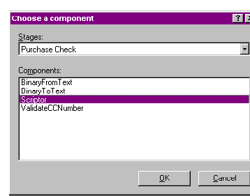
Figure 1. Purchase Check stage of the Purchase pipeline
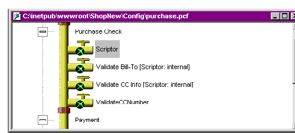
Figure 2. Pipeline Editor with Scriptor component added
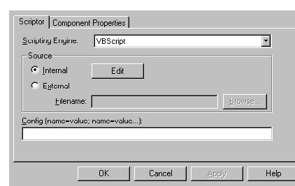
Figure 3. The Scriptor Properties screen
Scripting Engine specifies the scripting language in which the script is written -- JScript or VBScript. It may be practical to use VBScript rather than JScript, because the essence of the logic can be reused if you want to convert it into a Visual Basic pipeline component.
Source specifies whether the script is stored internally or externally. Internal indicates that the script is stored internally in the PCF file itself.
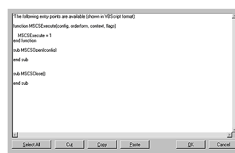
Figure 4. An internally stored script
Note: Use internal scripting for short scripts that do not require a lot of editing. Editing internal scripts is not fun. However, see the HTML Pipeline Editor section for more on this topic.
External indicates that the script is stored in an external file. The script's path and filename are displayed in the Filename box. If the Filename box is empty, the following dialog box appears, which enables you to import an external script and convert it to an internal script.
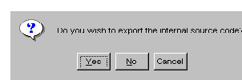
Figure 5. Dialog box that displays when the Filename box is empty
If you select Yes, you can create a file that has the default events of the Scriptor component. If you select No, you can use the Browse button to select the VBScript or JScript file.
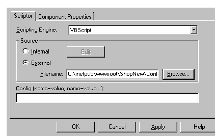
Figure 6. Full path to filename displays
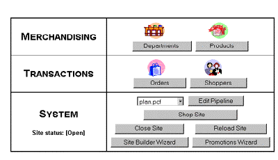
Figure 7. HTML Pipeline Editor's Administration screen
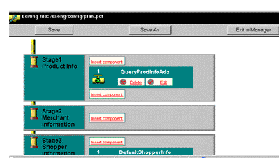
Figure 8. Editing files in a pipeline
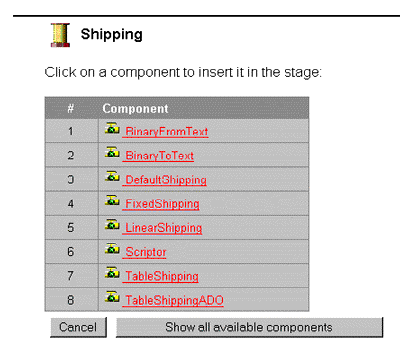
Figure 9. The Insert Component screen
Figure 10. Adding a Scriptor component to the pipeline
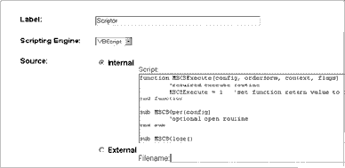
Figure 11. Editing the properties of the component
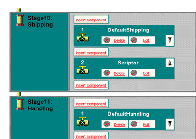
Figure 12. Returned to the Editing Pipeline screen
Figure 13. Save button
The pipeline configuration file with the new Scriptor component is saved and ready for testing.
The parameters passed into the MSCSExecute event of the Scriptor are:
Here are short explanations of Config, OrderForm, and Context:
Config is made of user-defined configuration parameters, which are passed in as name/value pairs through the Config box.
The OrderForm is a dictionary you can pass in through the Execute method when the pipeline configuration file is executed. It contains the data that is passed through the components in the pipeline.
The OrderForm object contains name/value pairs. The values are created and modified by the components in the pipeline. The name/pair values of an OrderForm look like those in the following tables at the final stages of pipeline processing, where most of the name/pair values have been created. Note that in the case of the Commerce Interchange Pipeline, the equivalent to the OrderForm -- the Transport dictionary -- is passed into the pipeline.
The Item Information Table below consists of the name/value pairs of one item that is added to the basket.
Item Information Table
| SKU | 016-001 |
| Quantity | 1 |
| Name | Product name 16 |
| list_price | 1099 |
| dept_id | 8 |
| pf_id | 016 |
| placed_price | 1099 |
| _product_pf_id | 016 |
| _product_name | product name 16 |
| _product_list_price | 1099 |
| _product_sale_price | 999 |
| _product_sale_start | 4/11/97 |
| _product_sale_end | 4/11/98 |
| _product_sku | 016-001 |
| _product_dept_id | 8 |
| _n_unadjusted | 1 |
| _oadjust_adjustedprice | 1099 |
| _iadjust_regularprice | 1099 |
| _iadjust_currentprice | 1099 |
| _oadjust_discount | 0 |
| _tax_total | 91 |
| _tax_included | 0 |
The Order Information Table consists of the name/value pair of the information about the order, including shipping, billing, and payment information.
Order Information Table
| shopper_id | PDXT8F8V9KS12M3H00LHR9HQDF500439 |
| date_changed | 9/19/98 3:48:15 PM |
| ship_to_name | Alan Saldanha |
| ship_to_street | Shipping address |
| ship_to_city | Shipping City |
| ship_to_state | TX |
| ship_to_zip | 76132 |
| ship_to_country | USA |
| ship_to_phone | 817-315-2266 |
| bill_to_name | Alan Saldanha |
| bill_to_street | Shipping address |
| bill_to_city | Shipping City |
| bill_to_state | TX |
| bill_to_zip | 76132 |
| bill_to_country | USA |
| bill_to_phone | 817-315-2266 |
| order_id | TBXT8F8V9KS12M3H00LHR9HQD7 |
| Shipping_method | shipping_method_1 |
| cc_name | Alan Saldanha |
| cc_type | Visa |
| _cc_number | 4111-1111-1111-1111 |
| _cc_expmonth | 9 |
| _cc_expyear | 1998 |
| _shopper_shopper_id | PDXT8F8V9KS12M3H00LHR9HQDF500439 |
| _shopper_date_created | 9/19/98 |
| _shopper_name | Alan Saldanha |
| _shopper_password | Tigertouch |
| _shopper_street | 6608 St Johns 2022 |
| _shopper_city | For Worth |
| _shopper_state | TX |
| _shopper_zip | 76132 |
| _shopper_country | USA |
| _shopper_phone | 817-315-2266 |
| _shopper_email | alan@vallin.com |
| _total_total | 2190 |
| _oadjust_subtotal | 1099 |
| _shipping_total | 1000 |
| _handling_total | 0 |
| _tax_included | 0 |
| _payment_auth_code | FAITH |
| _total_total | 2190 |
| ship_to_zip | 76132 |
| _tax_total | 91 |
Context is a Dictionary object that you pass into the pipeline when the configuration file is executed. In the case of stores and sites developed using the Site Builder Wizard, the assignment of information to the Context so that it can be used in a Scriptor component, and added to the Plan Pipeline (plan.pcf) is done in the UtilGetPipeContext function in i_util.asp:
function UtilGetPipeContext()
Set pipeContext = Server.CreateObject("Commerce.Dictionary")
Set pipeContext("MessageManager")= MSCSMessageManager
Set pipeContext("DataFunctions")= MSCSDataFunctions
Set pipeContext("QueryMap")= MSCSQueryMap
Set pipeContext("ConnectionStringMap") = _
MSCSSite.ConnectionStringMap
pipeContext("SiteName")= displayName
pipeContext("DefaultConnectionString") = _
MSCSSite.DefaultConnectionString
pipeContext("Language")= "USA"
Set UtilGetPipeContext = pipeContext
end function
There are really three ways to pass information into the script in a Scriptor component: Using the Config dictionary, Context dictionary, or Order form. Each method is best suited to a different situation, and is explained here.
Config dictionary. This method is best used for external scripts that may be used by multiple Scriptor components and differ only by the parameters passed in. The main advantage is that the value of a custom parameter can be set from the Pipeline Editor, without requiring a change to code. For example, you could use the Config text box to create a name/pair value for the name "toemail" to which an e-mail address can be assigned:
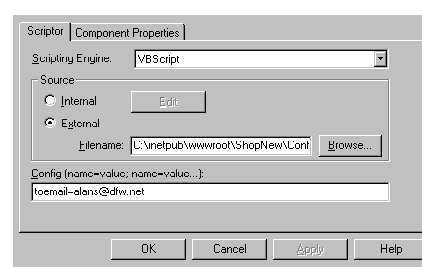
Figure 14. Setting the value of a custom parameter
The e-mail address assigned to toemail can then be used as the e-mail address to send a message to in the following script:
function mscsexecute(config, orderform, context, flags)
Dim CDoObject
Dim tempConfig
Dim toEmail
set tempConfig=config
toEmail=tempConfig.toemail
if toEmail <> "" then
Set CDoObject=CreateObject("CDONTS.NewMail")
CDoObject.From= "alan@vallin.com"
CDoObject.To=toEmail
CDoObject.Subject="test email to " & toEmail
CDoObject.Body="test email sent to " & toEmail
CDoObject.Send
Set CdoObject=nothing
end if
set tempConfig=Nothing
mscsexecute = 1
end function
When you need to change the e-mail address, just change the string assigned to toemail in the Config text box.
In a later section, a more practical example of how the Config dictionary can be used to pass parameters into a business rule is illustrated.
Context dictionary - This dictionary's purpose is to provide read-only access to data and methods available in the ASP script that are available in the pipeline. An example of such a case can be found in methods and properties of the MSCSMessageManager or MSCSQueryMap object. Both the MSCSMessageManager and MSCSQueryMap are usually created and initialized in the global.asa. Methods and properties are assigned to the Context dictionary (pipeContext in the case of UtilGetPipeContext function in i_util.asp) so they can be accessed by your Scriptor (or any other components in the pipeline):
Set pipeContext("MessageManager")= MSCSMessageManager
Set pipeContext("DataFunctions")= MSCSDataFunctions
Set pipeContext("QueryMap")= MSCSQueryMap
The context information is passed into the pipeline when the Execute method of an instance of the MtsPipeline or MtxPipeline object is called (for example, in function UtilRunPipe or UtilRunTxPipe in i_util.asp) as follows:
errorLevel = pipeline.Execute(1, orderForm, pipeContext, 0)
Accessing the methods and properties of the objects is as simple as accessing the name/value created in the pipeline context and passed into the MSCSExecute function. For example, to access a metaquery product_listing that was created initially created in globala.asa (usually function InitQueryMap), and assign it to the variable sqlstr in the script, you could use this script:
function MSCSExecute(config, orderform, context, flags)
Dim sqlstr
sqlstr= context. product_listing.SQLCommand
MSCSExecute =1
end function
If you want to have access to a message (for example, "No Credit-card Number was specified") that was initially created in the global.asa's InitMessageManager function and assign it to a variable, the following script would do it:
TempMessage=context.MessageManager.GetMessage _
("val_noccnumber","USA")
Along the lines specified above you can have access to the methods of the other objects that are usually passed into the pipeline like the DataFunctions object
OrderForm. You can use the OrderForm object to pass read/write information into the pipeline. This enables pipeline components in stages before and after your Scriptor component to make changes, and the changes made in the pipeline can be accessed by ASP pages after the OrderForm object has been processed by the pipeline.
For example, you might want to send a special message (that is not a warning or error message) to the shopper when specific products are added to the basket. One way to do this is create a SimpleList object in the OrderForm object in the ASP pages, before the pipeline configuration file that includes the Scriptor is executed. Depending on whether the specific product has been added to the basket, a special message can be added by the script to the SimpleList object that was passed in. The messages in the SimpleList can then be read by the ASP file after the order has been processed by the pipeline.
You might want to get the special message added each time a specific item (in our case a product by the name of "product name 1") is added to the order displayed in basket.asp, simply add the special message to the MSCSMessageManager object in global.asa (usually in function InitMessageManager) as follows:
call MSCSMessageManager.AddMessage("product_name_1", _
"Special message for product name 1")
Because basket.asp uses the function UtilRunPlan, create a SimpleList object in the OrderForm object before the pipeline is executed, with the following script:
set mscsorderForm("_MessageDict") = Server.CreateObject _
("Commerce.SimpleList")
The script that will be part of the Scriptor component checks to see if a product by the name of product name 1 has been added by the user, and adds a message to the SimpleList _MessageDict object as follows.
function MSCSExecute(config, orderform, context, flags)
Dim items, tempProdName, tempMessageDict, tempMessage
' Check to see if a dictionary was passed in or not
if IsObject(orderform.[_MessageDict]) then
' Get all the items added by the user
set items = orderform.items
' Get the SimpleList object that was passed in UtilPlan in i_util.asp
set tempMessageDict=orderform.[_MessageDict]
for each item in items
' Get the product name
tempProdName=item.Name
If InStr (tempProdName, "product name 1") then
' Add message to SimpleList object
tempMessageDict.Add _
context.MessageManager.GetMessage _
("product_name_1","USA")
exit for
end if
next
end if
MSCSExecute = 1
end function
Lastly, script that displays the special message(s) should be added to basket.asp after the call to function UtilRunPlan. To be safe, a check is done to make sure that the object exists before the count of messages are gotten as follows:
nMessageDict=0 if IsObject(mscsOrderForm.[_MessageDict]) then Set MessageDict = mscsOrderForm.[_MessageDict] nMessageDict = MessageDict.Count end if
You can then use the value of nMessageDict to display the special messages as follows:
if nMessageDict > 0 then
for iError = 0 to nMessageDict - 1
Response.write mscsPage.HTMLEncode(MessageDict(iError))
next
end if
Thus, when a user adds a product with the name value product name 1, the following displays in the browser:
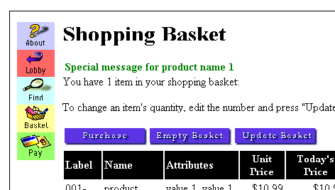
Figure 15. Shopping Basket displays special message
The Scriptor component can be used to extend the functionality of processing from within the pipeline. For example, let's say you wanted to send BCC e-mail from within pipeline at a particular stage of processing. You could use the NewMail object, which is part of the CDONTS Library (and which is not a pipeline component) in the script as follows:
function MSCSExecute(config, orderform, context, flags)
Set objMail = CreateObject("CDONTS.NewMail")
objMail.From= "fromuser@domain.com"
objMail.To="touser@domain.com"
objMail.Subject="subject"
objMail.Body="message body"
objMail.Bcc=" touser1@domain.com, touser2@domain.com"
objMail.Cc=" touser3@domain.com"
objMail.Send
Set objMail = nothing
MSCSExecute =1
end function
You can use the ADO object within the Scriptor component to interact with the database. In this case, an additional table, vc30_CCInfo, was created in the database for the Volcano Coffee Turbo sample site. The first highlighted line of code illustrates how an ADO connection is created, and the second highlighted line illustrates how the defaultConnectionString is read from the context assigned to the context in the UtilGetPipeContext function above.
function mscsexecute(config, orderform, context, flags)
Dim connection, str1
set connection = createobject("adodb.connection")
connection.open context.defaultConnectionString
str1= "INSERT INTO vc30_CCInfo (order_id , "_
& "shopper_id, cc_name, cc_type, cc_number," _
& "cc_expmonth, cc_expyear) VALUES (" _
& "'" & orderform.[order_id] & "'," _
& "'" & orderform.[shopper_id] & "'," _
& "'" & orderForm.[cc_name] & "'," _
& "'" & orderForm.[cc_type] & "'," _
& "'" & orderForm.[_cc_number] & "'," _
& "'" & orderForm.[_cc_expmonth] & "'," _
& "'" & orderForm.[_cc_expyear] & "')"
connection.execute (str1)
connection.close
set connection=nothing
mscsexecute = 1
end function
Note The script above also illustrates how the contents of the OrderForm can be accessed from within a Scriptor component in the pipeline.
The Scriptor component is ideally suited for adding business rules to the processing or orders that come into your store. For example, if you did not want to ship products to a certain country, you could send an error back to the user. The following script adds an error to the _Basket_Errors collection of the OrderForm, based on whether the ship_to_country value contains the string "Germany". Note that you first have to create a "message set" for the messages in German in the globala.asa file. Then messages are added to the German message set as follows.
Call MSCSMessageManager.AddLanguage("ger", &H0407)
CallMSCSMessageManager.AddMessage("bask_Germany", "Sorry, we do not ship to
Germany", "ger")
The script in the Scriptor would be the following:
function MSCSExecute(config, orderform, context, flags)
Dim intResult
Dim strCountry
intResult=1
strCountry=orderform.ship_to_country
if (Instr(strCountry, "Germany")) then
Set MSCSMessageManager = content.MessageManager
set BasketErrors=OrderForm.[_Basket_Errors]
errorMessage = _
MSCSMessageManager.GetMessage("bask_Germany", "ger")
BasketErrors.Add (errorMessage)
intResult=2
end if
MSCSExecute = intResult
end function
Another good example (thanks to Robert Barish) is using it to calculate the shipping cost as a percentage of the total price as opposed to a fixed sum.
function MSCSExecute(config, orderform, context, flags)
Dim mytotal
mytotal = CCur(orderform.[_oadjust_subtotal]) * .01
If mytotal <= 10 Then
orderform.[_shipping_total] = CStr(mytotal * .05 * 100)
ElseIf mytotal > 10 and mytotal <= 100 Then
orderform.[_shipping_total] = CStr(mytotal * .07 * 100)
Else
orderform.[_shipping_total] = CStr(mytotal * .1 * 100)
End If
MSCSExecute = 1
end function
The first highlighted line sets shipping to 5% of the order total for an order that is less than or equal to $10.00; and the next highlighted line sets shipping to 7% of the order total for an order that is greater than $10.01 and less than or equal to $100.00. The last highlighted line sets the shipping to 10% of the order total.
The Config text box can be used to add more flexibility to your Scriptor component by enabling you to set parameters that can be used by the logic in the Scriptor component.
For example, the shipping script above could be written to specify the percentage used based on whether the order is less than $10, greater than $10.01 and less than or equal to $100.00, or greater than $100.00.
You can use the Config text box to create name/pair values for different rates that need to be applied, depending upon the subtotal of the order. In the figure below, LessThanTen, TenToHundred, and Other are assigned the percentage to be applied if the order is less than $10, greater than $10.01 and less than or equal to $100.00, and greater than $100.00, respectively.
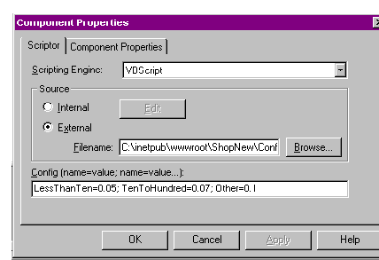
Figure 16. Creating a business rule in the Config text box
The script that uses the value passed in through the Config dictionary and calculates the shipping cost is:
function MSCSExecute(config, orderform, context, flags)
Dim mytotal,tempLessThanTen, tempTenToHundred, tempOther
' Get the value from the config dictionary
tempLessThanTen =config.LessThanTen
tempTenToHundred=config.TenToHundred
tempOther=config.Other
' Check to see if tempLessThanTen is valid
If IsNull(tempLessThanTen) _
or IsEmpty(tempLessThanTen) _
or Not IsNumeric(tempLessThanTen) then
tempLessThanTen=0
end if
' Check to see if tempTenToHundred is valid
If IsNull(tempTenToHundred) _
or IsEmpty(tempTenToHundred) _
or Not IsNumeric(tempTenToHundred) then
tempTenToHundred=0
end if
' Check to see if tempOther is valid
If IsNull(tempOther) _
or IsEmpty(tempOther) _
or Not IsNumeric(tempOther) then
tempOther=0
end if
mytotal = CCur(orderform.[_oadjust_subtotal]) * .01
If mytotal <= 10 Then
orderform.[_shipping_total] = CStr(mytotal * tempLessThanTen * 100)
ElseIf mytotal > 10 and mytotal <= 100 Then
orderform.[_shipping_total] = CStr(mytotal * tempTenToHundred * 100)
Else
orderform.[_shipping_total] = CStr(mytotal * tempOther * 100)
End If
MSCSExecute = 1
end function
The Scriptor component presents an interesting and advantageous way to implement business rules, especially ones that need to be added at a moment's notice. It may also be a way to move sections of ASP code in your existing applications into the pipeline. The fact that these components can be administered through the Web makes it very practical to add remote functionality from the pipeline processing, especially if your Commerce site is hosted by an ISP.
Alan provides consulting and training in ASP and Site Server
Commerce. He was featured in a Microsoft video for his use of
COM on the Campbell's Soup Web site, and runs a site devoted
to Site Server at http://www.siteserver101.com . He can be reached
alan@siteserver101.com
.
Did you find this material useful? Gripes? Compliments? Suggestions for other articles? Write us!
© 1999 Microsoft Corporation. All rights reserved. Terms of use.